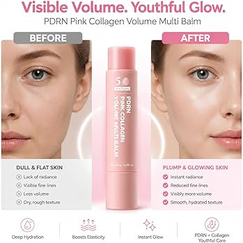

The rise of portable beauty products reflects a larger shift in contemporary routines. People want fewer objects, but better ones.
The appeal of the PDRN Pink Collagen Stick Multi Balm is not simply skincare. It is convenience refined into an elegant format.
Instead of carrying multiple creams or serums, the balm transforms hydration into something immediate: a small gesture performed between meetings, during travel, or before dinner.
What Is PDRN?
PDRN (Polydeoxyribonucleotide) has become one of the most discussed ingredients in modern skincare. Originally associated with regenerative treatments, it is often used in premium formulations that focus on hydration, skin recovery and visible softness.
While topical PDRN remains a subject of debate among dermatologists, many formulations combine it with collagen, peptides, hyaluronic acid, retinol and botanical extracts to create a more complete skincare experience.
The result is less about dramatic transformation and more about improving how skin looks throughout the day.

The Experience
The balm glides smoothly across the skin, leaving behind a subtle sheen without feeling oily.
Applied under the eyes, around the mouth, on the neck or across dry areas, it creates an immediate impression of moisture and softness.
Unlike heavier balms, the texture feels surprisingly controlled.
It is the type of product designed less for dramatic results and more for maintaining a polished appearance throughout the day.
Ingredients Worth Noticing
Beyond PDRN itself, the formula includes collagen, hyaluronic acid, retinol, caffeine, elastin, multiple peptides and botanical oils.
This layered approach helps explain why many users describe the balm as immediately hydrating, even when long-term anti-aging claims remain difficult to verify scientifically.
The texture and finish often appear to be as important as the active ingredients themselves.

Who It Is For
This is not a clinical treatment.
It is best understood as a lifestyle object: something designed for maintenance, comfort and presentation.
People who appreciate minimalist routines, portable skincare and lightweight hydration will likely find more value here than those seeking aggressive anti-aging treatments.
Final Thoughts
The most interesting thing about the PDRN Pink Collagen Stick Multi Balm is not whether it changes the skin dramatically.
It is how naturally it fits into everyday life.
Compact. Portable. Elegant.
A skincare object designed around presence rather than excess.
And in a category increasingly driven by noise, that restraint feels refreshing.